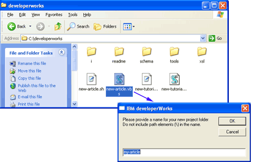
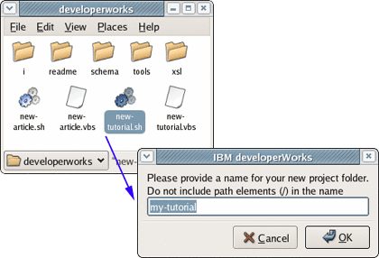

| Level: Introductory Editorial staff (dwinfo@us.ibm.com), developerWorks, IBM
10 Feb 2005
Updated 24 Oct 2005 Welcome, authors! This article shows you how to prepare technical articles and tutorials for publication on developerWorks. The steps are simple. You download our XML-based template for articles or for tutorials, fill in the template using any validating XML editor or your preferred Microsoft® Windows® or Linux® text editor, check it to ensure it follows the tagging structure as defined in the developerWorks schema, and preview your article or tutorial. Tips for composing your content and submitting it to the developerWorks staff are also included. Getting started The editors at developerWorks look forward to
working with you to publish your content. Please be sure you
have presented your idea to an editor and have
obtained his or her approval to proceed before using these
instructions. If you haven't already,
you can use our
content
submission form to submit your idea. Articles and tutorials are published on developerWorks in HTML format,
but are written using XML (Extensible Markup Language) format.
Prior to publication, the XML source of each article and tutorial is validated for
acceptable markup as defined in the developerWorks schema and then
transformed into the HTML for publication using an XSLT
(Extensible Stylesheet Language for Transformations) stylesheet.
This separation of article content from presentation details
helps us use automated processes to manage our large site. The authoring approaches we offer do not require specialized skills.
If you are familiar with XML or HTML already, you'll find our
article and tutorial templates easy to use. If not, you can get acquainted with XML
by reading the composition tips later
in these instructions, and by browsing the
New to XML page on the
developerWorks XML zone.
Article or tutorial? If you've browsed the developerWorks site, you know that articles and
tutorials make up the bulk of developerWorks content. Their format and purpose differ.
Your developerWorks editor can help you decide which format better suits your content idea. Tutorials - Tutorials have educational objectives; they teach. Rather than simply
listing steps, tutorials explain why the step is done and how it relates
to the overall objective. Tutorials spell out their educational objectives
and time to completion (usually less than two hours). After
completing a tutorial, the reader should be able to repeat the
learned task independently.
- Tutorials can teach concepts or how to complete tasks.
Many tutorials teach both concepts and tasks, and encourage
readers to try the tasks while reading. To make it easy to follow
along, tutorials often include sample code and advice for setting
up the reader's environment. Tutorials also often chunk
content into discrete and manageable tasks that make up the whole.
- Tutorials require registration.
- Tutorials average 20 to 30 pages when printed. And because
the task may take an hour or more to complete, many readers print
the tutorial PDF for reference during or after the task.
- A tutorial can stand alone or be one part of a multi-part series.
Articles - Like tutorials, articles often teach, but less overtly than tutorials.
Articles don't spell out their educational objectives or time to
completion.
- In addition to instructing readers on a particular task, articles
can also introduce new concepts, architectures, or product features.
These kinds of articles aim to raise readers' awareness and
whet their appetite to learn more (perhaps by taking a developerWorks
tutorial!). Other kinds of articles take a more persuasive tone, where
the author shares his or her unique approach, perspective, or experience.
And other kinds of articles delve into a new product or technology by
interviewing an expert or reviewing current literature on the topic.
- Articles don't require registration.
- Articles average 10 pages or fewer when printed. Readers
generally read article content online.
- Like tutorials, an article can stand alone or be one part of a multi-part
series.
Basic steps Create an article or tutorial by following these steps:
- Download the author package and unzip the file.
- Create a folder and XML template for your article or tutorial.
- Edit the XML template to add your content,
then validate that XML against the schema and correct any errors.
- Preview your article or tutorial in a browser
to get an idea of how it will appear on developerWorks.
Step 1. Download the author
package Download the author-package.zip file
and place it in a suitable location (for example,
C:\ on Windows or your home directory on
Linux). Unzip the file to place all the files in their correct locations. The developerworks directory does not have to be located in the
root directory or even on the Windows C:\ drive.
However, the tools assume the location of files within the developerworks
directory and its subdirectories, so please keep the developerworks
directory structure and file names as is.
After you unzip the file, you should see a developerworks directory
(or folder) containing the following subdirectories:
- i -- contains images needed to preview your article or
tutorial.
- readme -- contains a copy of this article (index.html),
as well as the companion article on using alternative tools
(tools.html).
The XML source for both (index.xml and tools.xml) is also included.
- schema -- contains the schema files. The main schema file
is named dw-document-n.n.xsd. (n.n is the
level of the developerWorks schema. 5.2 is the schema level at the time
of writing.)
- xsl -- contains the primary stylesheet file
dw-document-html-n.n.xsl and
several secondary stylesheets.
- tools -- contains two templates
(template-dw-article-5.2.xml and
template-dw-tutorial-5.2.xml) as well as some simple tools
to help you set up and validate a new article. The java subdirectory contains
the source of the Java™ programs which are used
with the Linux validation and transformation tool, in case you want to
modify or rebuild them.
The files and tools included in the author package are designed for use
on Linux or Windows.
If you need assistance editing the templates using an operating system
other than Windows or Linux, please contact your developerWorks
editor.
Release notes Before moving on to Step 2, let's preview what's changed
in this release. At the time of this writing, the release level of
the developerWorks schema and stylesheets is 5.2. The
author-package.zip file and this article conform to
the 5.2 release. You should prepare your article or tutorial using the 5.2
schema and stylesheets. If you are using an earlier release of
the developerWorks schema and stylesheets, you'll need to
download the 5.2 author-package.zip file. The 5.2 schema and stylesheets were released on 20 Oct 2005, and include
only minor changes from the previous version. Tutorials and articles both
use the same primary schema (xsd file) and primary stylesheet (xsl file):
- Primary schema: dw-document-5.2.xsd
- Primary stylesheet: dw-document-html-5.2.xsl
To sum up the changes in XML coding for authors: - In articles and tutorials, the maximum length for
lines of code in code listings (<code type="section">)
is now extended to 90 characters (it was 70 max.
characters previously).
- In articles and tutorials, you can code lists (<ul>
and <ol>) within blockquotes (<blockquote>).
- In articles and tutorials, "Workplace" is available as a
primary or secondary content area
(<content-area-primary name="workplace" />).
- In tutorials only, you can omit the "Back to top" rule
and link at the bottom of the text under a major heading
by adding the "back-to-top" attribute
(<refname="" type="major" back-to-top="no">).
This should only be required when a heading might
overwrite the right column of content viewed in Internet
Explorer.
- In tutorials only, the "Document options" section now
includes a page count for the PDFs (A4 and letter size).
Your developerWorks editor will fill this in prior to
publishing the content.
Step 2. Create
a new template In this step you'll set up your own copy of the
article or tutorial template using a tool from the author package.
This will create a new file, called index.xml, in a
separate directory. It will set up the proper paths and also
adjust the template so it works properly in the different operating
system environments. Using Microsoft
Windows In the developerworks directory, double-click
new-article.vbs to create an
article or new-tutorial.vbs to create a
tutorial. You may choose any valid name as your folder name.
The defaults are my-article and my-tutorial.
Figure 1.
Creating and naming a new article on Windows

After you click OK, you should see a new folder
in the developerworks folder. You may need to refresh
your view (View > Refresh) to see it. This new folder
contains your article or tutorial template (index.xml) and a validation
and transformation script (dw-transform.vbs).
Using Linux Use the new-article.sh or
new-tutorial.sh shell script in
the developerworks directory.
(If you're running the KDE or GNOME desktops, you can run this
from a graphical manager, such as Nautilus or Konqueror; otherwise, run
the script in a terminal window.) You'll see a dialog box in which
you can enter your new project's name.You can choose any valid
name. The defaults are my-article and my-tutorial.
Figure 2.
Creating and naming a new tutorial on Linux

After you select OK (or press Enter),
you should see a new folder within the developerworks folder.
This new folder contains your article or tutorial template (index.xml)
and a validation and transformation script (dw-transform.sh).
Step 3. Edit and validate
your XML You can choose either of two basic methods for editing and validating your XML source. Using a validating XML editor Using a validating XML editor to edit and validate your XML
helps you identify any errors as you go. Many
commercial XML editors are on the market today for both Windows
and Linux. Three examples are Rational® Web
Developer for WebSphere® Software, <oXygen/>,
and Altova XMLSpy (see Resources
for links to downloads and documentation).
All three provide free downloadable trial versions,
and we recommend that you read the instructions
that come with these products to learn how to use them. All
the required and supporting files you'll need to use these
products, or other commercial XML editors, to develop your article or
tutorial are in the developerWorks
author-package.zip file. Some free XML editors are also available.
Besides the commercial version of XMLSpy mentioned above,
Altova has introduced a free Home Edition of XMLSpy.
In addition, plug-ins are available for the Eclipse
platform that you can use for preparing XML documents.
See Resources for links.
When using a validating XML editor or workbench,
keep in mind: - In the templates, the references to the
schema and stylesheet files are relative to your tutorial or article
directory. You may need to change the references
(
..\schema\5.2\dw-document-5.2.xsd and
..\xsl\5.2\dw-document-html-5.2.xsl)
to absolute references such as
C:\developerworks\schema\5.2\dw-document-5.2.xsd.
In some editors, you may have to specify the location of
these files through other configuration means.
- If you transform your tutorial or article in an XML editor, and none
of your images display, it is likely that the editor has created
the HTML file in a directory used for temporary storage. If so,
you will need to save the generated HTML file in your article
directory (my-article, in our example), and open it either in the
XML editor GUI or with a browser.
Using a text editor and validation tools If you can't find a validating XML editor you like, or prefer
not to take the time now to learn how to use one, you can use
your preferred text editor to edit the XML template and then use the
tools supplied in the author package (dw-transform.vbs for
Windows or dw-transform.sh for Linux) to validate your XML
and transform it
to HTML. You can then preview your HTML in a browser. See the
companion article "Using the developerWorks XML validation tools"
for details on using these simple tools.
Step 4. Preview
your article or tutorial You can preview your article or tutorial to get a general idea
of what the final output will look like. However, there will be
some differences between the previewed version and the
final version. When you preview your tutorial or article, focus
on the content and don't worry about the presentation
or style issues. We will make necessary modifications when
we do the final edit. If you are using a validating XML editor, check the
documentation for instructions on how to transform the XML
into an HTML file and then view that file with a browser.
Some editors have a browser preview option to simplify this step. If you are using a text editor and the developerWorks scripts,
your output HTML will be created in your article or tutorial folder.
Open index.html with a browser. More detailed instructions on
using these scripts are in
"Using
the developerWorks XML validation tools".
Composition tips | New to XML
markup?
Like all XML documents, the XML templates in the author package follow these rules:
- XML tags (the strings between < and >) are in lowercase.
- XML tags usually come in a pair: a start tag and a matching end tag.
For example, <title> and </title> are the start and end tags for
your article or tutorial title.
- Your content goes between the tags, as in <title>Groovy's
growth spurt</title>.
- An exception to the tag pairs is a tag such as a line break (<br />)
or an image tag (<img />), where a single tag serves as both start
and end; in this case, the tag ends with />.
- Comment lines are surrounded with <!-- and -->.
|
|
The XML templates are your best source for
comprehensive tips on developing your article or tutorial.
Extensive comments in the templates (template-dw-article-5.2.xml
and template-dw-tutorial-5.2.xml in the
tools directory) guide you through every aspect
of coding your article or tutorial.
You can also look at the the XML
source for this article (index.xml in the
readme directory) as a guide. Here are some
other tips you might find helpful: - You can cut and paste from other file formats into
the XML template. If you cut and paste from a file
with embedded formatting, such as a Microsoft Word
file, use your editor's capabilities to paste
(or paste special) as text, or save the file as a TXT
file before you cut and paste from it. Do not cut and
paste directly from a formatted file such as a Word
file.
- Remember to use end tags. For example, every
paragraph tag (<p>) needs its closing tag
(</p>). Also, empty elements like the break tag
(<br />) and the image tag (<img />) need
a closing slash.
- Avoid span tags, code font tags, and font
classes.
- When including listings of sample code:
- Confine code line lengths to 70
characters, INCLUDING blank spaces.
- Avoid hardcoding blank spaces or tabs at
the end of a line of sample code.
- Avoid using tabs at the beginning of a
line of sample code. If you must indent, use blank spaces.
- Do not use color. If you want to highlight a portion
of your sample code, use bold (<b> and </b>)
instead.
- When providing downloadable sample code, zip the
code up and send the zip file to your editor separately.
- Create all artwork files, including screen
captures, as JPG or GIF files, and be sure they do not
exceed 440 pixels in width. Send the artwork files to your editor. See
"Illustrating
your article or tutorial for developerWorks" to learn how to
more about how to create and deliver effective graphics.
- Code special characters as follows:
Table 1. Special characters| Character | XML coding |
|---|
| Ampersand (&) | & (Always
code ampersands as & -- even in
URLs.) | | Apostrophe (') | ' | | Greater than sign (>) | > | | Less than sign (<) | < | | Quotation mark (") | " | | Registered trademark (®) | <reg/> (Authors can, but don't need to insert trademark symbols; the developerWorks editorial staff will take care of trademarks.) | | Trademark (™) | <trade/> (Authors can, but don't need to insert trademark symbols; the developerWorks editorial staff will take care of trademarks.) |
For example, to include angle brackets in a code section: <TABLE border="0" width="100%">
|
You would code the following in the XML template:
<TABLE border="0"
width="100%"> - And finally, to better see your own content as you develop
it (and to endear yourself to your developerWorks editor), remove
the comment lines from the article file as you become familiar
with the tagging.
 |
Highlighting
conventions Not sure what needs <code type="inline">
tagging and what doesn't?
Do you use italics or quotes for a book title? When should you
use bold -- or no highlighting at all? Table 2 shows the
highlighting conventions recommended for developerWorks
articles. Table 2. Recommended highlighting| Highlighted element | Recommended highlighting | Example |
|---|
| "Article titles" | Quotes | "Article titles" | | Book titles | Italics | <i>Book titles</i> | C/C++ code | Inline code | <code type="inline">C/C++ code</code> | Classes | Inline code | <code type="inline">Classes</code> |
| Code section | <code type="section">
Code
samples
</code> | Code snippets (less
than one line) referenced in text | Inline code | <code type="inline">Code snippets (less
than one line) referenced in text</code> | | Column or series names | Italics | <i>Column or series names</i> | Command names | Inline code | <code type="inline">Command names</code> | | Directory names | No highlighting | Directory names | | Emphasis | Italics. For example: "Use that to introduce a restrictive
clause. Do not type over .." | Use <i>that</i> to introduce a restrictive clause. Do
<i>not</i> type over .. | Exception names | Inline code | <code type="inline">Exception names</code> | | File names | No highlighting | File names | Function
calls | Inline code | <code type="inline">Function
calls</code> | | GUI controls | Bold. For example: "On the Installation menu, click
Install a new feature > Finish." | On the Installation menu, click <b>Install a new
feature</b> > <b>Finish</b>. | HTML tags or
portions | Inline code | <code type="inline">HTML tags or
portions</code> | Interfaces | Inline code | <code type="inline">Interfaces</code> | Keywords (such as
static) | Inline code | <code type="inline"> Keywords (such as
static)</code> | | Magazine titles | Italics. For example: "See the related article in
LinuxToday ..."." | See the related article in <i>LinuxToday</i> ... | Message text or
prompts addressed to the user | Inline code | <code type="inline">Message text or
prompts addressed to the user</code> | Methods | Inline code | <code type="inline">Methods</code> | Objects | Inline code | <code type="inline">Objects</code> | | Path names | No highlighting | Path names | | Terms defined in context | Italics | <i>Terms defined in context</i> | Text entered by
users | Inline code | <code type="inline">Text entered by
users</code> | | "Tutorial titles" | Quotes | "Tutorial titles" | Types (such
as int or long) | Inline code | <code type="inline">Types (such
as int or long)</code> | | URLs | No highlighting | URLs | | Variables | Italics. For example: "... where myname
represents your user ID..." | ... where <i>myname</i>
represents your user ID... | XML tags or
portions | Inline code | <code type="inline">XML tags or
portions</code> |
|
Submitting your
article or tutorial to developerWorks Once you've finished your masterpiece, you're
ready to send it to your developerWorks editor. E-mail the
XML file for your article or tutorial (along with any associated
graphics or sample code) to your editor. For detailed guidelines
and tips on creating and submitting graphics for your article, see
"Illustrating
your article or tutorial for developerWorks: Graphic design tips
for authors."
If you have any questions or problems, please
contact
your editor for additional help.
Download | Description | Name | Size | Download method |
|---|
| IBM developerWorks author package, V5.2 | author-package-v5.2-20051024.zip | 485 KB | FTP |
Resources Learn
Get products and technologies
Discuss
About the author | | This content is brought to you by the developerWorks editorial staff. |
Rate this page
| |